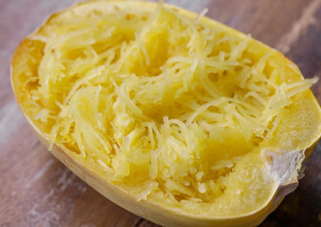

Cucurbita pepo var. fastigata 'spaghetti squash'
Type: Vintersquash
Højde: 60 cm
Såafstand: 100 cm
Rækkeafstand: 100 cm
Sådybde: 2 cm
Lysforhold: Sol, Halvskygge
Forspiring: April Maj
Udplantning/såning på friland: Maj Juni
Spiring efter: ca. 14 - 28 dage
Moden til høst efter: ca. 88 dage